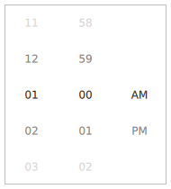

Tumbler QML Type
Spinnable wheel of items that can be selected. More...
| Import Statement: | import QtQuick.Controls 2.5 |
| Since: | Qt 5.7 |
| Inherits: |
Properties
- count : int
- currentIndex : int
- currentItem : Item
- delegate : Component
- model : variant
- moving : bool
- visibleItemCount : int
- wrap : bool
Attached Properties
- displacement : real
- tumbler : Tumbler
Methods
- void positionViewAtIndex(index, PositionMode mode)
Detailed Description

Tumbler {
model: 5
// ...
}
Tumbler allows the user to select an option from a spinnable "wheel" of items. It is useful for when there are too many options to use, for example, a RadioButton, and too few options to require the use of an editable SpinBox. It is convenient in that it requires no keyboard usage and wraps around at each end when there are a large number of items.
The API is similar to that of views like ListView and PathView; a model and delegate can be set, and the count and currentItem properties provide read-only access to information about the view. To position the view at a certain index, use positionViewAtIndex().
Unlike views like PathView and ListView, however, there is always a current item (when the model isn't empty). This means that when count is equal to 0, currentIndex will be -1. In all other cases, it will be greater than or equal to 0.
By default, Tumbler wraps when it reaches the top and bottom, as long as there are more items in the model than there are visible items; that is, when count is greater than visibleItemCount:
import QtQuick 2.12 import QtQuick.Window 2.2 import QtQuick.Controls 2.12 Rectangle { width: frame.implicitWidth + 10 height: frame.implicitHeight + 10 function formatText(count, modelData) { var data = count === 12 ? modelData + 1 : modelData; return data.toString().length < 2 ? "0" + data : data; } FontMetrics { id: fontMetrics } Component { id: delegateComponent Label { text: formatText(Tumbler.tumbler.count, modelData) opacity: 1.0 - Math.abs(Tumbler.displacement) / (Tumbler.tumbler.visibleItemCount / 2) horizontalAlignment: Text.AlignHCenter verticalAlignment: Text.AlignVCenter font.pixelSize: fontMetrics.font.pixelSize * 1.25 } } Frame { id: frame padding: 0 anchors.centerIn: parent Row { id: row Tumbler { id: hoursTumbler model: 12 delegate: delegateComponent } Tumbler { id: minutesTumbler model: 60 delegate: delegateComponent } Tumbler { id: amPmTumbler model: ["AM", "PM"] delegate: delegateComponent } } } }
See also Customizing Tumbler and Input Controls.
Property Documentation
[read-only] count : int |
This property holds the number of items in the model.
currentIndex : int |
This property holds the index of the current item.
The value of this property is -1 when count is equal to 0. In all other cases, it will be greater than or equal to 0.
See also currentItem and positionViewAtIndex().
[read-only] currentItem : Item |
This property holds the item at the current index.
See also currentIndex and positionViewAtIndex().
delegate : Component |
This property holds the delegate used to display each item.
model : variant |
This property holds the model that provides data for this tumbler.
moving : bool |
This property describes whether the tumbler is currently moving, due to the user either dragging or flicking it.
This property was introduced in QtQuick.Controls 2.2 (Qt 5.9).
visibleItemCount : int |
This property holds the number of items visible in the tumbler. It must be an odd number, as the current item is always vertically centered.
wrap : bool |
This property determines whether or not the tumbler wraps around when it reaches the top or bottom.
The default value is false when count is less than visibleItemCount, as it is simpler to interact with a non-wrapping Tumbler when there are only a few items. To override this behavior, explicitly set the value of this property. To return to the default behavior, set this property to undefined.
This property was introduced in QtQuick.Controls 2.1 (Qt 5.8).
Attached Property Documentation
[read-only] Tumbler.displacement : real |
This attached property holds a value from -visibleItemCount / 2 to visibleItemCount / 2, which represents how far away this item is from being the current item, with 0 being completely current.
For example, the item below will be 40% opaque when it is not the current item, and transition to 100% opacity when it becomes the current item:
delegate: Text {
text: modelData
opacity: 0.4 + Math.max(0, 1 - Math.abs(Tumbler.displacement)) * 0.6
}
[read-only] Tumbler.tumbler : Tumbler |
This attached property holds the tumbler. The property can be attached to a tumbler delegate. The value is null if the item is not a tumbler delegate.
Method Documentation
Positions the view so that the index is at the position specified by mode.
For example:
positionViewAtIndex(10, Tumbler.Center)
If wrap is true (the default), the modes available to PathView's positionViewAtIndex() function are available, otherwise the modes available to ListView's positionViewAtIndex() function are available.
Note: There is a known limitation that using Tumbler.Beginning when wrap is true will result in the wrong item being positioned at the top of view. As a workaround, pass index - 1.
This method was introduced in QtQuick.Controls 2.5 (Qt 5.12).
See also currentIndex.